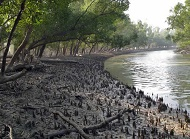
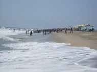

Shundorban

The Sundarbans (Shundorban) is a natural region in southern Bangladesh and extreme southern part of the Indian state of West Bengal in the vast river delta on the Bay of Bengal. It is the largest single block of tidal halophytic mangrove forest in the world.[2][3][4] The Sundarbans covers approximately 10,000 square kilometres (3,900 sq mi) most of which is in Bangladesh with the remainder in India.[5][6] The Sundarbans is a UNESCO World Heritage Site.[5]
Sundarbans South, East and West are three protected forests in Bangladesh. This region is densely covered by mangrove forests, and is the largest reserves for the Bengal tiger. The Sundarbans National Park is a National Park, Tiger Reserve, and a Biosphere Reserve located in the Sundarbans delta in the Indian state of West Bengal.
Cox's Bazar

Cox's Bazar (Koksbajar, Koksbazar or Kokshbajar) is a town, a fishing port and district headquarters in Bangladesh. The beach in Cox's Bazar is an unbroken 120 km (75 mi) sandy sea beach with a gentle slope, one of the world's longest.[2][3][4] It is located 150 km (93 mi) south of the industrial port Chittagong. Cox's Bazar is also known by the name Panowa, whose literal translation means "yellow flower." Its other old name was "Palongkee".
The modern Cox's Bazar derives its name from Captain Hiram Cox (died 1799), an officer of the British East India Company. Cox was appointed Superintendent of Palongkee outpost after Warren Hastings became Governor of Bengal. Captain Cox was specially mobilised to deal with a century-long conflict between Arakan refugees and local Rakhains. He embarked upon the task of rehabilitating refugees in the area and made significant progress. Captain Cox died in 1799 before he could finish his work. To commemorate his role in rehabilitation work, a market was established and named Cox's Bazar ("Cox's Market") after him.
Today, Cox's Bazar is one of the most-visited tourist destinations in Bangladesh, though it is not a major international tourist destination. In 2013, the Bangladesh Government formed the Tourist Police unit to better protect local and foreign tourists, as well as to look after the nature and wildlife in the tourist spots of Cox's Bazar.[5]